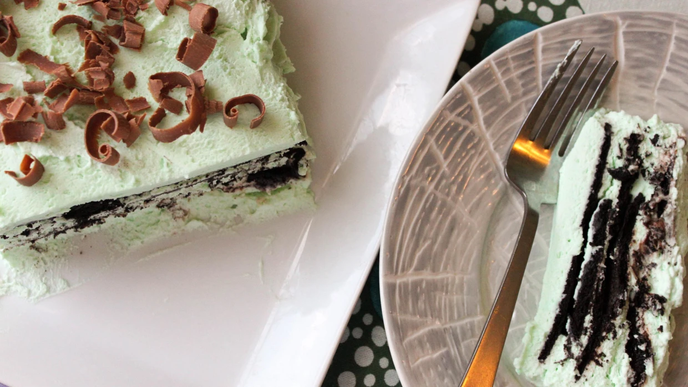

Chocolate Mint Icebox Dessert

Description:
This Chocolate Mint Icebox Dessert features this and that and that with this. Yum!
Ingredients:
- 4 cups heavy whipping cream
- 1/2 cup confectioners' sugar
- 1 tsp peppermint extract
- 1 (9 oz) package chocolate wafer cookies
- Chocolate syrup or sundae syrup
- 7-8 drops green food coloring (optional)
- 1 chocolate bar for chocolate curls (optional)
Directions:
- Refrigerate the bowl of a stand mixer and the whisk attachment (or a medium metal bowl and beaters from a hand mixer) until quite cold, about 15 minutes.
- Once chilled, remove the whisk and bowl from the refrigerator. Add the cream and sugar; whip on medium-high speed until just thickened. Add the extract and (optional) food coloring; on medium-high speed, whip the cream until it holds stiff peaks that stand upright when the whisk is raised (the stiffer the cream, the more support it will provide the wafers in your cake).
- Line a large loaf pan with plastic wrap that hangs slightly over the pan sides. Using a small offset spatula or the back of a spoon, spread a generous layer of the whipped cream on the bottom of the lined pan. Cover as much of the whipped cream as possible with a layer of the wafers, filling any gaps with broken wafers. The pieces should touch for a solid layer of wafers. Drizzle the chocolate syrup over the wafers. Continue layering whipped cream, wafers, and chocolate syrup until you run out or reach the top of the pan, ending with whipped cream (about 3 to 4 layers). Reserve any remaining whipped cream in the refrigerator.

- Gently cover the cake with plastic wrap. Refrigerate for 24 hours. Peel the plastic wrap from the cake, place the serving platter over the cake, and invert the cake onto the platter. Carefully remove the pan and plastic-wrap lining. If you have leftover whipped cream, use it to cover any whipped cream gaps in the cake.
- Top icebox cake with chocolate curls, if desired. (To make chocolate curls, warm the chocolate bar in the microwave slightly until just soft, about 20 seconds. Run a vegetable peeler down the side of the chocolate bar to make curls.) Using a knife, cut cake into slices, and serve.